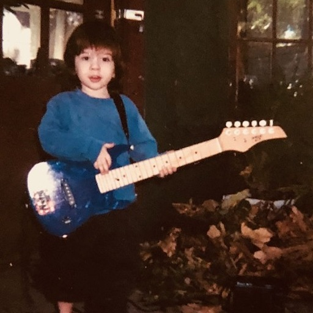
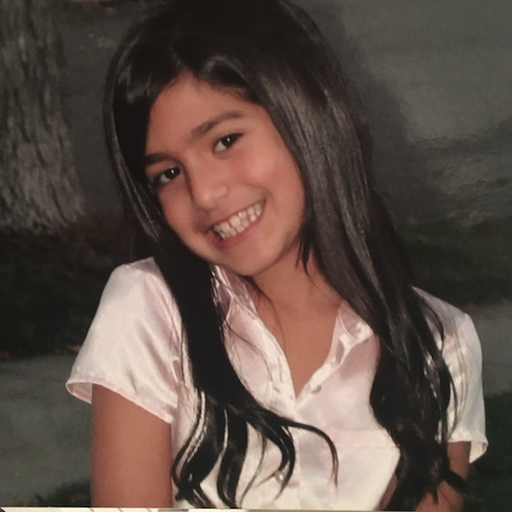

About M(US)E
MUSE is UCLA’s first undergraduate journal publishing student work in music scholarship. A student-run organization, MUSE aims to allow undergraduate students an outlet to share their academic work with a broader public.
Our goal is to publish scholarship over a wide range of music-related subjects, including but not limited to disciplines such as historical musicology, ethnomusicology, music analysis, popular music, pedagogy, performance practice, critical theory, aesthetics, gender and sexuality, and cultural studies.
Submissions to MUSE are open to any undergraduate student, regardless of institution, major, or course of study.
Editorial Board

JW Clark
Editor-in-Chief

Liv Slaby
Managing Editor
Gabe Deibel
Gabe Deibel
Managing Editor

Matthew Gilbert
Technical Editor
Alana Chester
Technical Editor

Karen Thantrakul
Technical Editor
Torrey Bubien
Technical Editor
Alexa Baruch